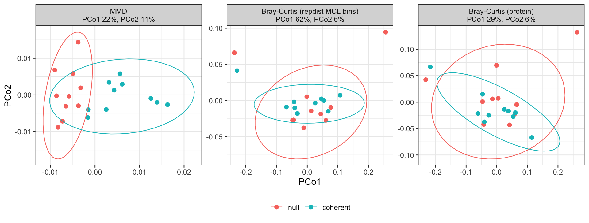

Question. Can repdist detect hidden shared coherence when every sample enriches a different protein and a different sequence cluster?
At the accession level both groups look equally heterogeneous. Only the coherent group hides a shared family, so its samples should be closer to one another than the null group’s: reduced dispersion of the coherent group is the signal, measured by PERMDISP’s dispersion ratio. This is a positive control, not a symmetric biological comparison. Simulation 2 compares two functional states symmetrically.
library(repdist)
library(ggplot2)
library(vegan)Twenty samples, two groups of ten, follow a negative-binomial model. Every protein of the universe is present at baseline in every sample; sample \(i\) has expected composition
\[ p_i = (1 - \rho)\,\pi + \rho\, q_i , \]
where \(\pi_j \propto \mathrm{LogNormal}(0, 1)\) is the common baseline and \(q_i\) spreads its mass evenly over sample \(i\)’s enriched proteins. The signal strength \(\rho\) is the expected share of abundance on the enriched proteins: a defined mass, not a fold change. Counts have mean \(\mu_{ij} = s_i D p_{ij}\) with depth \(D = 2 \times 10^4\) and size factor \(s_i \sim \mathrm{LogNormal}(0, 0.25)\), and variance \(\mu + \phi\mu^2\), with a DESeq2-like dispersion trend at each count’s own mean, \(\phi_{ij} = (0.1 + 1/\mu_{ij})\, e_j\), \(e_j \sim \mathrm{LogNormal}(0, 0.5)\). The \(k\)-th enriched protein of the second group takes the baseline abundance of the \(k\)-th of the first, so the groups also match on the baseline of the proteins that carry the signal.
The signal strength is \(\rho\) = 2%, fixed before any result: in the source study of the case study, glycoside hydrolases rose from under 1% to over 2.5% of the metaproteome on the yeast diet (Blakeley-Ruiz et al. 2025). The same model is used in Simulation 2.
depth <- 2e4
rho <- 0.02
nb_counts <- function(up, ids, rho, pairs) {
n <- length(up)
pi <- setNames(rlnorm(length(ids)), ids)
pi[pairs[, 2]] <- pi[pairs[, 1]] # matched baseline of enriched proteins
pi <- pi / sum(pi)
s <- rlnorm(n, 0, 0.25)
e <- rlnorm(length(ids), 0, 0.5)
p <- matrix((1 - rho) * pi, n, length(ids), byrow = TRUE,
dimnames = list(names(up), ids))
for (j in seq_len(n)) {
p[j, up[[j]]] <- p[j, up[[j]]] + rho / length(up[[j]])
}
mu <- s * depth * p
phi <- (0.1 + 1 / mu) * rep(e, each = n)
matrix(rnbinom(length(mu), mu = mu, size = 1 / phi), n,
dimnames = dimnames(p))
}sample_mmd(), the maximum mean
discrepancy between samples under a Gaussian kernel on the protein
embeddings (see the Reference).protein_similarity() → bin_proteins() →
bin_glom(), then Bray-Curtis on the bin counts. The bins
depend only on the universe, so they are built once, with package
defaults (predicted TM-score ≥ 0.7, coverage ≥ 0.5, inflation 2).Coherence. vegan::betadisper() measures
each group’s dispersion, the mean distance of its samples to the group
centroid, and PERMDISP (permutest(), 999 permutations of
the sample labels) tests the difference (Anderson 2006; Oksanen et al.
2025). The dispersion ratio (coherent /
null) is below 1 when the coherent samples are closer together.
PERMANOVA (adonis2(), 999 permutations)
(Anderson
2001) tests for a difference in centroids. Here the coherent
group is expected to be tighter, so a significant PERMDISP is part of
the signal, not an artefact, and PERMANOVA reflects spread as well as
location.
group_tests <- function(D, group) {
set.seed(1)
a <- adonis2(D ~ group, data = data.frame(group = group),
permutations = 999)
bd <- betadisper(D, group)
set.seed(1)
c(`PERMANOVA R2` = a$R2[1], `PERMANOVA p` = a$`Pr(>F)`[1],
`dispersion ratio` = bd$group.distances[["coherent"]] /
bd$group.distances[["null"]],
`PERMDISP p` = permutest(bd, permutations = 999)$tab[1, "Pr(>F)"])
}
test_all <- function(D, group) {
t(vapply(D, group_tests, numeric(4), group = group))
}ff <- readRDS(file.path("curated", "simulation_funfam.rds"))
funfam_proteins <- ff$proteins
ann <- ff$annotation
# every domain has its own 50% cluster and its own UniProt accession
stopifnot(identical(ann$domain, names(funfam_proteins)),
!anyDuplicated(ann$mmseqs50), !anyDuplicated(ann$accession))
c(FunFams = nrow(ff$families), domains = length(funfam_proteins))
#> FunFams domains
#> 144 762
ff$provenance$steps
#> seed_alignment_domains bacteria_archaea
#> 339674 140538
#> length_50_1000 standard_residues
#> 140282 139722
#> unique_sequences clusters_within_one_funfam
#> 34906 34906
#> one_per_50pct_cluster one_per_accession
#> 786 762
#> capped_per_funfam
#> 762FunFams are the functional sub-classification of CATH superfamilies
(Das et al.
2015): functionally coherent subfamilies of domain sequences
within one structural superfamily (Sillitoe et al. 2021). They are
domain-level families, so the universe holds domain sequences, not
full-length proteins. data-raw/simulation_funfam.R takes,
in each of the 300 CATH v4.3 superfamilies with the most S35
representatives, the largest FunFam whose seed alignment has DOPS ≥ 70.
Its Bacteria and Archaea members of 50 to 1000 residues, with standard
residues only, are clustered with MMseqs2 at 50% identity and 80%
coverage of both sequences, and one domain is kept per cluster (clusters
spanning two FunFams are dropped), then one per UniProt accession, at
most 100 per FunFam (the largest has 48). In this universe FunFam
members are also close in sequence: the 34906 unique prokaryotic domain
sequences fall into 786 clusters at 50% identity, so only broad FunFams
can supply ten sequence-disjoint domains. Every domain was embedded with
embed_proteins(model = "tmvec"). One FunFam per superfamily
keeps different FunFams structurally distinct.
FunFam is a deliberately structure- and function-aligned positive control: its members share fold and function by construction. It is not evidence that every functional class is structurally compact; Simulation 2 uses enzyme classes, which often span several folds.
A FunFam is a target if it has at least ten domains, so its ten enriched domains come from ten different 50% clusters and ten different proteins. Eligibility uses only FunFam membership and the clusters, never the embeddings or any result; every FunFam stays in the universe as background.
n_per_group <- 10L
targets <- sort(names(which(table(ann$family) >= n_per_group)))
length(targets)
#> [1] 24For target \(t\) (seed \(t\)): the coherent group’s ten samples each enrich one domain of the target FunFam, drawn without replacement. Each null sample enriches one domain from a different non-target FunFam, so the ten null domains come from ten FunFams of ten other superfamilies; each is the domain closest in length to one coherent domain (ties at random), and takes that domain’s baseline abundance. Both groups use the same \(\rho\), depth, size factors and dispersion model.
draw_ff <- function(i) {
set.seed(i)
coherent <- ann$domain[ann$family == targets[i]]
coherent <- coherent[sample.int(length(coherent), n_per_group)]
pool <- ann[ann$family != targets[i], ]
null <- character(n_per_group)
for (j in sample.int(n_per_group)) {
gap <- abs(pool$length - ann$length[match(coherent[j], ann$domain)])
best <- which(gap == min(gap))
best <- best[sample.int(length(best), 1L)]
null[j] <- pool$domain[best]
pool <- pool[pool$family != pool$family[best], ]
}
up <- as.list(c(null, coherent))
names(up) <- sprintf("s%02d", seq_along(up))
list(up = up, pairs = cbind(coherent, null),
group = factor(rep(c("null", "coherent"), each = n_per_group),
c("null", "coherent")))
}
simulate_ff <- function(i) {
d <- draw_ff(i) # sets the seed; the counts continue the same stream
d$counts <- nb_counts(d$up, ann$domain, rho, d$pairs)
d
}S <- protein_similarity(funfam_proteins,
n_cores = BiocParallel::multicoreWorkers())
bins <- bin_proteins(S)
distances_ff <- function(counts) {
list(
MMD = sample_mmd(counts, funfam_proteins),
`Bray-Curtis (repdist MCL bins)` = vegdist(bin_glom(counts, bins),
"bray"),
`Bray-Curtis (protein)` = vegdist(counts, "bray")
)
}The representative target is drawn with a fixed seed before any simulation is run.
set.seed(20261008)
ex <- sample(length(targets), 1)
sim <- simulate_ff(ex)
ff$families[ff$families$family == targets[ex], c("family", "name")]| family | name | |
|---|---|---|
| 1197 | 3.30.70.890/FF/000001 | Galactokinase |
# no accession or 50% cluster repeats; lengths are matched
stopifnot(!anyDuplicated(unlist(sim$up)),
!anyDuplicated(ann$mmseqs50[match(unlist(sim$up), ann$domain)]))
sapply(list(coherent = sim$pairs[, 1], null = sim$pairs[, 2]),
function(d) summary(ann$length[match(d, ann$domain)]))
#> coherent null
#> Min. 161.00 161.00
#> 1st Qu. 171.25 171.25
#> Median 175.50 174.50
#> Mean 173.50 173.40
#> 3rd Qu. 176.75 176.75
#> Max. 180.00 180.00
D <- distances_ff(sim$counts)
knitr::kable(test_all(D, sim$group), digits = 3)| PERMANOVA R2 | PERMANOVA p | dispersion ratio | PERMDISP p | |
|---|---|---|---|---|
| MMD | 0.155 | 0.001 | 0.816 | 0.007 |
| Bray-Curtis (repdist MCL bins) | 0.044 | 0.439 | 0.834 | 0.460 |
| Bray-Curtis (protein) | 0.038 | 0.965 | 0.935 | 0.542 |
Ellipses are 95% ellipses per group (multivariate t).

The share of variance on the first axis says how concentrated the variation is, not how well the groups separate. Under Bray-Curtis on MCL bins the first axis follows a few samples whose enriched domain fell in a small bin, and correlates 0.10 with the grouping; under MMD it correlates 0.81.
The representative is one of 24 eligible targets. Repeating the simulation with each target FunFam in turn (seed = target index) shows whether the result holds beyond one family. Per distance, the number of targets whose coherent group is tighter (dispersion ratio < 1), the median ratio, and the number significant by PERMDISP and by PERMANOVA:
bench <- do.call(rbind, lapply(seq_along(targets), function(i) {
s <- simulate_ff(i)
r <- test_all(distances_ff(s$counts), s$group)
data.frame(method = factor(rownames(r), names(D)), r, row.names = NULL,
check.names = FALSE)
}))
summ <- do.call(rbind, lapply(split(bench, bench$method), function(d) {
data.frame(method = d$method[1],
`coherent tighter` = sum(d$`dispersion ratio` < 1),
`median dispersion ratio` = median(d$`dispersion ratio`),
`PERMDISP p ≤ 0.05` = sum(d$`PERMDISP p` <= 0.05),
`PERMANOVA p ≤ 0.05` = sum(d$`PERMANOVA p` <= 0.05),
check.names = FALSE)
}))
knitr::kable(summ, digits = 3, row.names = FALSE)| method | coherent tighter | median dispersion ratio | PERMDISP p ≤ 0.05 | PERMANOVA p ≤ 0.05 |
|---|---|---|---|---|
| MMD | 23 | 0.838 | 13 | 24 |
| Bray-Curtis (repdist MCL bins) | 15 | 0.940 | 0 | 1 |
| Bray-Curtis (protein) | 10 | 1.021 | 1 | 1 |
MCL places 23 of the 24 target FunFams in a single bin (of 146).
FunFam is a favourable case, chosen as a positive control. Simulation 2 asks the harder question, a symmetric contrast between enzyme classes that span many sequence families and often several folds.
sessionInfo()
#> R version 4.5.2 (2025-10-31)
#> Platform: aarch64-apple-darwin20
#> Running under: macOS 27.0.1
#>
#> Matrix products: default
#> BLAS: /System/Library/Frameworks/Accelerate.framework/Versions/A/Frameworks/vecLib.framework/Versions/A/libBLAS.dylib
#> LAPACK: /Library/Frameworks/R.framework/Versions/4.5-arm64/Resources/lib/libRlapack.dylib; LAPACK version 3.12.1
#>
#> locale:
#> [1] en_US/en_US/en_US/C/en_US/en_US
#>
#> time zone: America/New_York
#> tzcode source: internal
#>
#> attached base packages:
#> [1] stats graphics grDevices utils datasets methods base
#>
#> other attached packages:
#> [1] vegan_2.7-5 permute_0.9-10 ggplot2_4.0.3 repdist_0.99.0
#>
#> loaded via a namespace (and not attached):
#> [1] sass_0.4.10 generics_0.1.4 lattice_0.22-9
#> [4] MCL_1.0 digest_0.6.39 magrittr_2.0.5
#> [7] evaluate_1.0.5 grid_4.5.2 RColorBrewer_1.1-3
#> [10] fastmap_1.2.0 jsonlite_2.0.0 Matrix_1.7-5
#> [13] mgcv_1.9-4 scales_1.4.0 Biostrings_2.78.0
#> [16] codetools_0.2-20 jquerylib_0.1.4 cli_3.6.6
#> [19] expm_1.0-0 rlang_1.3.0 crayon_1.5.3
#> [22] XVector_0.50.0 splines_4.5.2 withr_3.0.3
#> [25] cachem_1.1.0 yaml_2.3.12 otel_0.2.0
#> [28] tools_4.5.2 parallel_4.5.2 BiocParallel_1.44.0
#> [31] dplyr_1.2.1 BiocGenerics_0.56.0 vctrs_0.7.3
#> [34] R6_2.6.1 stats4_4.5.2 lifecycle_1.0.5
#> [37] Seqinfo_1.0.0 S4Vectors_0.48.1 IRanges_2.44.0
#> [40] MASS_7.3-65 cluster_2.1.8.2 pkgconfig_2.0.3
#> [43] pillar_1.11.1 bslib_0.11.0 gtable_0.3.6
#> [46] glue_1.8.1 xfun_0.58 tibble_3.3.1
#> [49] tidyselect_1.2.1 knitr_1.51 farver_2.1.2
#> [52] htmltools_0.5.9 nlme_3.1-169 labeling_0.4.3
#> [55] rmarkdown_2.31 compiler_4.5.2 S7_0.2.2